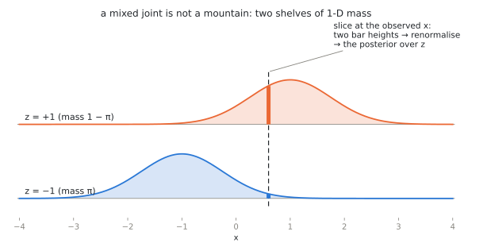

Joint, Marginal, Conditional — and Bayes
An Advanced tutorial, the second of two on the measure-theoretic view of probability, continuing Measuring Things. Like its predecessor it is optional: the working versions of joints, marginals and conditioning are in Probability & Random Variables. One new move — paint two numbers on the blob instead of one — generates the entire multivariate vocabulary: joints as mountains, marginals as shadows, conditionals as renormalized slices, Bayes’ rule as the license to slice in either direction. No new measure theory is needed.
1. Two colorings, one blob
Recall the picture: a blob \(\Omega\) of unit mass, a probability measure \(P\) weighing its regions, and a random variable as numbers painted on the blob. Now paint the blob twice: two measurable functions
\[ X : \Omega \to \mathbb{R}, \qquad Y : \Omega \to \mathbb{R}, \]
on the same blob. This co-residence is the whole point. “\(X\) and \(Y\) are jointly distributed” is not an extra assumption bolted on later; it is the statement that one outcome \(\omega\) determines both numbers at once — height and weight of the same person, today’s price and tomorrow’s price of the same stock, clean image and noisy image from the same generation run.
The pair is a single map into the plane,
\[ (X, Y) : \Omega \to \mathbb{R}^2, \qquad \mu_{X,Y} \;=\; (X,Y)_\# P, \]
and the pushforward \(\mu_{X,Y}\) — the blob’s mass transported to the plane — is the joint distribution. When it has a density \(p(x,y)\), picture the joint as a mountain of mass over the plane: total volume \(1\), height = mass per unit area.
2. Marginals are shadows — and shadows forget
The marginal of \(X\) is nothing new: it is the pushforward of \(P\) under \(X\) alone, obtained from the joint by integrating out the other coordinate,
\[ p(x) = \int p(x, y)\, dy , \qquad p(y) = \int p(x, y)\, dx . \]
Geometrically: collapse the mountain onto one axis — the marginal is the mountain’s shadow. And a shadow forgets. It records how much mass sits over each \(x\), but nothing about how that mass is distributed in \(y\).
This forgetting is a one-way street with a name you will meet again:
The map from joints to marginal pairs is many-to-one. Fix both shadows to be standard normal; then every correlation \(\rho \in (-1, 1)\) gives a different mountain casting those same two shadows (Act I of the demo below — drag \(\rho\) and watch the mountain twist while the shadows stand still). Those are only the jointly Gaussian couplings of two standard normals; that pair admits many non-Gaussian couplings too.
Twisting one ellipse is the mild version of the point. Here is the version you cannot argue with. Write \(N_{(u,v)}(x,y) = \mathcal{N}(x; u, s^2)\, \mathcal{N}(y; v, s^2)\) for a round Gaussian lump of width \(s\) centred at \((u,v)\), fix \(a > s > 0\), and put lumps at the four corners \((\pm a, \pm a)\). Build three joints by placing mass on them differently:
\[ \begin{aligned} p_{\nearrow}(x,y) &= \tfrac12 N_{(-a,-a)} + \tfrac12 N_{(+a,+a)}, \\ p_{\searrow}(x,y) &= \tfrac12 N_{(-a,+a)} + \tfrac12 N_{(+a,-a)}, \\ p_{\boxplus}(x,y) &= \tfrac14 \big( N_{(-a,-a)} + N_{(+a,+a)} + N_{(-a,+a)} + N_{(+a,-a)} \big). \end{aligned} \]
Integrating \(N_{(u,v)}\) over \(y\) leaves exactly \(\mathcal{N}(x; u, s^2)\), so each joint’s \(x\)-marginal is the weighted sum of its lumps’ \(x\)-factors. In every one of the three, the total weight sitting at \(u = -a\) is \(\tfrac12\) and at \(u = +a\) is \(\tfrac12\) — and likewise in \(y\). So all three have the identical pair of shadows, exactly and not approximately: the same two-bump curve
\[ p(x) \;=\; \tfrac12\, \mathcal{N}(x; -a, s^2) + \tfrac12\, \mathcal{N}(x; +a, s^2) \]
on each axis. Yet one is two lumps on the rising diagonal, one is two lumps on the falling diagonal, and one is four lumps in a square. Their correlations are \(+\tfrac{a^2}{a^2 + s^2}\), \(-\tfrac{a^2}{a^2 + s^2}\) and \(0\) — strongly positive, strongly negative, and exactly zero (using \(\operatorname{Var}(X) = a^2 + s^2\)). The third is genuinely independent — it is the product of its marginals. The first two are dependent, with correlation magnitude approaching \(1\) as \(a/s\) grows.
Click through the three in Act I of the demo and watch the shadow curves on the edges: they do not so much as flicker. Nothing computed from the marginals alone — not their means, not their variances, not their complete one-dimensional shapes — distinguishes joints this different. And note where the correlation sits in this: it is not computable from the marginals either. It is joint information, one number’s worth, which the shadows have thrown away along with everything else. A joint with prescribed marginals is called a coupling of them, and the set of couplings is enormous. Many generative constructions induce a coupling of noise and data — a particular mountain over the (noise, data) plane — and some, such as minibatch-OT flow matching, select one on purpose. The transport tutorials (the intuitive story and the rigorous account) study what additional structure picks out a map, a coupling, a kernel or a path; tutorial 10 is insistent that merely exhibiting a coupling explains less than it appears to. The mathematics of that choice starts here, with the fact that shadows do not determine the mountain.
One special coupling deserves its name now: \(X\) and \(Y\) are independent when the joint is the product of the marginals, \(p(x,y) = p(x)\,p(y)\) — the mountain built by extruding one shadow along the other, with no interaction. Independence is thus one point in the vast space of couplings, not the typical case; elementary courses over-expose it because it is the easiest mountain to compute with.
Interactive demo — The Joint Slicer
3. Conditionals are slices, renormalized
Fix a value \(x_0\) and ask: given that \(X = x_0\), how is \(Y\) distributed? On the mountain, the answer is geometric: cut a vertical slice through the mountain at \(x = x_0\). The slice’s profile \(y \mapsto p(x_0, y)\) has the right shape but the wrong total — it is a sliver of mass, not a probability distribution. So renormalize: divide by the slice’s own area, which is exactly the marginal \(p(x_0)\). The result is the conditional density
\[ p(y \mid x_0) \;=\; \frac{p(x_0, y)}{p(x_0)} . \]
Slice, then renormalize. That is the entire definition, and Act I of the demo lets you drag the slice line and watch both steps: the raw sliver (dashed) and its re-inflated version (solid).
In blob language, for an event \(B\) with \(P(B) > 0\), conditioning genuinely does restrict the blob to \(B\) and rescale: \(P(A \mid B) = P(A \cap B)/P(B)\), ordinary division.
For \(X = x_0\) with a continuous \(X\) that story is not available, and it is worth being exact about why. The fibre \(\{X = x_0\}\) has mass zero; there is nothing to rescale, and \(0/0\) is not a definition. So the displayed formula is not restriction-and-rescaling in disguise — it is a new object, and it comes with hypotheses. Assume the joint has a density that is continuous near \(x_0\) and that \(p(x_0) > 0\). Then the quotient defines a natural continuous version of the conditional density, and it is recovered as the limit of thickened slices \(\{x_0 \le X \le x_0 + \varepsilon\}\) as \(\varepsilon \to 0\).
Two caveats to file away. The function \(y \mapsto p(x_0, y)\) is a density cross-section, not a sliver of mass: its integral is the marginal density \(p(x_0)\), not the probability of a zero-width strip. And in general — without the continuity assumption — a conditional law is a disintegration, pinned down only for \(P_X\)-almost every \(x_0\), so different versions may disagree at any particular value.
Because that limit is taken along shrinking bands, the answer can depend on the shape of the bands. The same probability-zero set can be presented in two ways — say, as the vertical line \(\{X = 0\}\) or as a diagonal-parameterized family that happens to collapse onto that same line — and the two shrinking procedures can yield different conditional distributions. This is the Borel–Kolmogorov paradox. The first half of the rule is simple: a conditional distribution is defined relative to a chosen slicing variable (formally: a chosen \(\sigma\)-algebra), never relative to the bare event. Always know which variable you are conditioning on.
But naming the variable is not quite enough either, and it would be dishonest to stop there. Conditioning on \(\sigma(X)\) determines the conditional law only for \(P_X\)-almost every value; at any single null value \(x_0\) a regular conditional kernel may be redefined at will. So what actually keeps this course safe is not that the slicing variable is explicit — though it always is — but that Gaussian smoothing gives every \(p(x_t \mid x_0)\) and \(p_t\) a positive, smooth density. That supplies a canonical continuous version, and identities between conditionals should otherwise be read as holding almost everywhere.
4. Bayes’ rule is the freedom to slice both ways
The mountain does not care which axis you slice along. Vertical slices give \(p(y \mid x)\); horizontal slices give \(p(x \mid y)\); and both factorizations rebuild the same mountain:
\[ p(x, y) \;=\; p(y \mid x)\, p(x) \;=\; p(x \mid y)\, p(y). \]
Read the second equality as a statement about one object — ribbons of conditional mass, weighted by the shadow, tile the mountain, in either direction — and division gives
\[ p(x \mid y) \;=\; \frac{p(y \mid x)\, p(x)}{p(y)} , \qquad p(y) = \int p(y \mid x)\, p(x)\, dx . \]
That is Bayes’ rule. On the measure-theoretic picture it is not a new axiom, not a philosophy, not even a theorem of any depth: it is the observation that a mountain admits two slicings. All of its power in applications comes from an asymmetry of availability, not of mathematics — models are naturally specified in one direction (a cause \(x\) producing an observation \(y\) via \(p(y \mid x)\)), while inference needs the other (\(p(x \mid y)\)). Bayes’ rule is the pivot between them.
5. Mixed joints: the two-shelf picture
Diffusion models constantly condition between a discrete variable and a continuous one, and there the mountain picture needs one adjustment. Let \(z \in \{-1, +1\}\) be a latent label with \(P(z = -1) = \pi\), and let \(x \mid z \sim \mathcal{N}(z, \sigma^2)\). The joint of \((z, x)\) is not a mountain over the plane: it is two shelves of 1-D density, one per value of \(z\), holding masses \(\pi\) and \(1 - \pi\):
\[ p(z, x) \;=\; \begin{cases} \pi \cdot \mathcal{N}(x; -1, \sigma^2) & z = -1,\\[2pt] (1-\pi) \cdot \mathcal{N}(x; +1, \sigma^2) & z = +1. \end{cases} \]

Everything from §§2–4 transfers verbatim, with one integral replaced by a sum:
- Marginal of \(x\) (shadow of both shelves): the mixture \(p(x) = \pi\, \mathcal{N}(x; -1, \sigma^2) + (1-\pi)\, \mathcal{N}(x; +1, \sigma^2)\).
- Conditional of \(x\) given \(z\) (one shelf, renormalized): just \(\mathcal{N}(x; z, \sigma^2)\) — the model as specified.
- Conditional of \(z\) given \(x\) — slice vertically at \(x\). The slice meets two points of mass, the heights of the two shelves; renormalizing the pair gives the posterior
\[ P(z = +1 \mid x) = \frac{(1-\pi)\, \mathcal{N}(x; +1, \sigma^2)} {\pi\, \mathcal{N}(x; -1, \sigma^2) + (1-\pi)\, \mathcal{N}(x; +1, \sigma^2)} . \]
This is Bayes’ rule again, but now the slice-and-renormalize is a two-bar histogram — Act II of the demo, where the slice line drags across both shelves and the posterior bars re-balance live.
The worked example this course runs on
Set \(\pi = \tfrac12\). Cancel the common factor and simplify the ratio of Gaussians:
\[ P(z = +1 \mid x) = \frac{\exp\!\big(\!-\tfrac{(x-1)^2}{2\sigma^2}\big)} {\exp\!\big(\!-\tfrac{(x+1)^2}{2\sigma^2}\big) + \exp\!\big(\!-\tfrac{(x-1)^2}{2\sigma^2}\big)} = \frac{1}{1 + e^{-2x/\sigma^2}} = \operatorname{sigmoid}\!\left(\frac{2x}{\sigma^2}\right), \]
and therefore the posterior mean of the label is
\[ \mathbb{E}[z \mid x] = (+1)\,P(z{=}{+1} \mid x) + (-1)\,P(z{=}{-1} \mid x) = \tanh\!\left(\frac{x}{\sigma^2}\right). \]
This sigmoid/tanh pair is the exact object that appears in Two-Point Diffusion as the optimal denoiser \(\mathbb{E}[x_0 \mid x]\) — under the dictionary \(z \leftrightarrow x_0\) and \(x \leftrightarrow x_\sigma\), since \(x = z + \sigma\varepsilon\) here is that tutorial’s VE corruption \(x_\sigma = x_0 + \sigma\varepsilon\). (Mind the letter: \(z\) is the clean label here and the noise there.) Concretely: what a denoiser computes is a posterior mean — a slice through a joint of (clean, noisy), renormalized, then averaged. Seen from this tutorial, the W01 formula is one drag of the slice line in Act II.
Four pictures, one object. The joint is the complete description (mountain, or shelves). Marginals are its shadows — lossy, with many joints per shadow-pair. Conditionals are its slices, renormalized to unit mass — well-defined once you say which variable slices. Bayes’ rule is the identity between the two ways of slicing. Every probabilistic statement in this course — \(p(x_t \mid x_0)\), the posterior over components, \(\mathbb{E}[x_0 \mid x_t]\) — is one of these four moves on some joint.
6. What is deferred, deliberately
Three objects belong to this storyline but deserve their own installment: likelihood (the conditional read as a function of the parameter, not the data), the score (the gradient of a log-density, i.e. of a log-slice), and KL divergence (a measure-theoretic comparison of two mountains). Where each is actually picked up: likelihood in Distributions and Maximum Likelihood, and the score in Two-Point Diffusion and the probability-flow ODE. KL has no measure-theoretic treatment in the present sequence — it is used in lecture in its working form, and a proper installment is still owed.
Exercises
- Two fair coin tosses; \(X\) = first toss, \(Y\) = number of heads. Write the four nonzero entries of the joint as a \(2 \times 3\) table, compute both marginals (shadow along each axis), and both conditional families. Verify Bayes’ rule on \(P(X = H \mid Y = 1)\).
- The standard bivariate normal with correlation \(|\rho| < 1\) has density \[ p(x,y) = \frac{1}{2\pi\sqrt{1-\rho^2}} \exp\!\Big(\!-\tfrac{x^2 - 2\rho x y + y^2}{2(1-\rho^2)}\Big). \] Verify by completing the square in \(y\) that the vertical slice at \(x_0\), renormalized, is \(\mathcal{N}(\rho x_0,\, 1 - \rho^2)\). Confirm both readings against the demo: the slice’s centre moves with \(x_0\) (unless \(\rho = 0\)), while its width is the same for every \(x_0\).
- Construct two different joints on \(\{0,1\}^2\) with both marginals uniform. (You have found two couplings of the same shadows. How many are there?)
- Show that if \(p(x,y) = p(x)\,p(y)\) then every vertical slice, renormalized, is the same distribution \(p(y)\) — independence means the slices don’t move. Check this in Act I at \(\rho = 0\). Note carefully why that check is legitimate here: the family is jointly Gaussian, and for jointly Gaussian pairs zero correlation does imply independence. In general it does not — the four-lump joint above is uncorrelated and dependent.
- Derive the sigmoid posterior above, keeping general \(\pi \in (0,1)\); show the effect of \(\pi \neq \tfrac12\) is an additive shift \(\tfrac{\sigma^2}{2}\log \tfrac{1-\pi}{\pi}\) in \(x\). Watch the bars in Act II shift as you drag \(\pi\).
- For general \(\pi\) the posterior mean is the shifted tanh of Exercise 5, \[ \mathbb{E}[z \mid x] = \tanh\!\Big(\tfrac{x}{\sigma^2} + \tfrac12 \log \tfrac{1-\pi}{\pi}\Big), \] which reduces to \(\tanh(x/\sigma^2)\) only at \(\pi = \tfrac12\). Integrating that against the mixture marginal gives \(\mathbb{E}[\,\mathbb{E}[z \mid x]\,]\) — and you should be able to name the answer, \(1 - 2\pi\), without computing any integral. (This is the tower property; it will become the workhorse identity of the course. Check what goes wrong if you integrate the unshifted \(\tanh(x/\sigma^2)\) against an unequal mixture.)
- (Borel–Kolmogorov, lean.) On the unit square with uniform mass, the event “\(Y = X\)” has probability zero. Two different variables vanish exactly on it: \[ U = Y - X, \qquad V = \frac{Y - X}{1 + X}. \] Both band families \(\{|U| \le \varepsilon\}\) and \(\{|V| \le \varepsilon\} = \{|Y - X| \le \varepsilon(1+X)\}\) shrink to the same diagonal. Parameterising that diagonal by \(x \in [0,1]\), show the first induces the uniform limiting density \(1\) and the second induces \(\tfrac{2(1+x)}{3}\). Same limiting set, different answers — so it is the variable, not the event, that the conditional depends on.